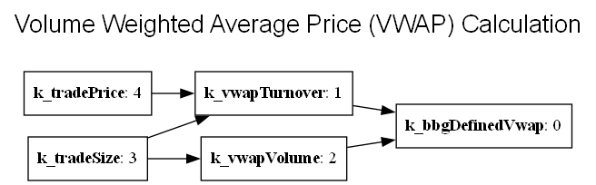

Component of the Week #3: bdlb_topologicalsortutil
- Summary:
Enables sorting the nodes of a Directed Acyclic Graph in dependency order.
Directed Acyclic Graphs (also known as DAGs) are the bread and butter of dependencies. Each node in a DAG has 0 or more directional relationships (often a dependency relationship) with other nodes in the graph, and no cycles are permitted. For example, a package management system like dpkg uses a DAG describing the dependencies of the libraries it manages to build those dependencies in an appropriate order. Such a package manager will generally build the lowest level packages in the dependency hierarchy first (i.e., those packages that have no dependencies), followed by packages that directly depend on those leaf packages, etc.
DAGs are often described using a list of edges where each edge in turn is a pair of nodes where one node depends on the other. A topological sort can be used to get from such a list of directed edges (describing the dependencies between nodes) to a list of nodes ordered by their level of dependency. Typically this list describes the order in which an algorithm should process the nodes.
bdlb::TopologicalSortUtil
provides a (template) algorithm for performing such a topological sort (in a
customizable manner). The sort will fail if the DAG contains a cycle and
also report the unsortable nodes in the unsorted output, therefore the
operation can be used to detect cycles as well.
Another common example of the need for topological sorting is in evaluating a spreadsheet-like set of formulas, where formulas in individual cells may depend on other cells (but cycles are not permitted). Whenever a cell changes, we need to recalculate all the formulas that depend on that changed cell. To do this, we topologically sort the graph of dependent cells rooted a the cell that changed, and in so doing ensure the cells that depend directly on the changed cell are evaluated first, then cells that depend on the changed cell through one level of indirection are evaluated second, and so forth.
The code example below is a simplified rendering of a similar set of formulas for calculating Volume Weighted Average Price (VWAP) – the diagram below illustrates the dependencies between these formulas.

#include <bsl_iostream.h>
#include <bsl_algorithm.h>
#include <bdlb_topologicalsortutil.h>
using namespace BloombergLP;
int main()
{
enum FieldId {
k_bbgDefinedVwap = 0,
k_vwapTurnover = 1,
k_vwapVolume = 2,
k_tradeSize = 3,
k_tradePrice = 4
};
const bsl::vector<bsl::pair<FieldId, FieldId>> relations {
{ k_vwapTurnover, k_bbgDefinedVwap },
{ k_vwapVolume, k_bbgDefinedVwap },
{ k_tradeSize, k_vwapVolume },
{ k_tradeSize, k_bbgDefinedVwap },
{ k_tradePrice, k_vwapTurnover },
};
bsl::vector<FieldId> results;
bsl::vector<FieldId> unsorted;
bool sorted = bdlb::TopologicalSortUtil::sort(&results,
&unsorted,
relations);
bsl::copy(results.begin(),
results.end(),
bsl::ostream_iterator<int>(bsl::cout, "\n"));
}
There’s more to bdlb::TopologicalSortUtil than the simple example shown
here - there are concepts such as NODE_TYPE, EdgeType, as well as
INPUT_ITER, OUTPUT_ITER, and UNORDERED_ITER that allow full
customization of the types the algorithm works on, all tied together in
TopologicalSortUtilEdgeTraits. Check out the
documentation for bdlb_topologicalsortutil
for details.